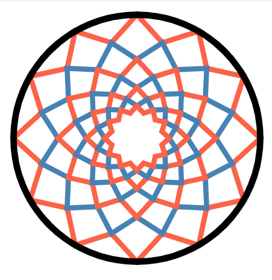

| Home | Registration | Program | Abstracts | Contact |
Several areas of mathematics provide useful tools for the study of quivers and associative algebras. Through three lecture series by experts and contributed talks by participants, this summer school will explore novel categorical and geometrical innovations in the field.
Registration is open. Due to limited capacity, the number of participants will be limited to 20. Participants will be selected on a first come, first served basis.
It is intended that the introductory lectures be given by participants, as this is an excellent learning opportunity. If you wish to give a lecture, please tick the relevant box in the registration form. There will also be a limited number of contributed talks given by participants.
This summer school is organized by junior faculty with links to CHARMS. The organizing committee consists of:
|
|
 |
|